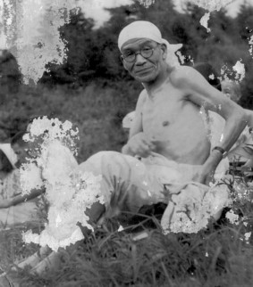
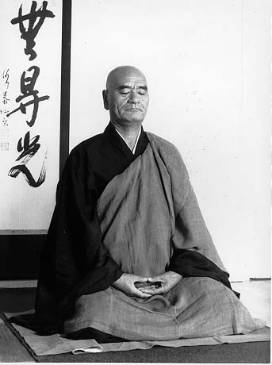
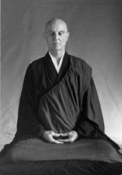

Kodo Sawaki Roshi (1880–1965)
Kodo Sawaki, unlike most other Masters, refused to take charge of the monasteries offered him during his lifetime. Even after receiving the Shiho from his own Master, he remained to the end an unsui — a wandering monk. Orphaned young, his youth was spent in difficult circumstances before he proved himself as a soldier in the Sino-Japanese War, was left for dead, and eventually made his way on foot to Eiheiji Temple to begin his practice.
Known as a scholar who derided the Buddhist scriptures as mere "footnotes" to zazen, Kodo Sawaki taught wherever he was welcome — schools, universities, offices, prisons, fishing villages, cities. His disciples included Taisen Deshimaru. At his death at Antaiji in 1965, he was recognized as a great reformer in Japanese Soto Zen.
Today two statues — one of Kodo Sawaki and one of Taisen Deshimaru — stand at the entrance to the Buddhist University of Komazawa.

Taisen Deshimaru Roshi (1914–1982)
Born in Kyushu in 1914 of an old Samurai family, Deshimaru eventually received monastic ordination from Kodo Sawaki and, on Sawaki's deathbed, the Kesa and Shiho of transmission. He went on to establish the AZI (Association Zen Internationale) in France and its retreat center, La Gendronniere in the Loire Valley.
At his death he was recognized by the Sotoshu in Japan as the head teacher of Soto Zen for Europe. His legacy includes hundreds of dojos affiliated with AZI in Europe, Africa, and South America. For an in-depth narrative of his life, see his Autobiography of a Zen Monk (Hohm Press, 2022), translated by Richard Collins.

Robert Livingston Roshi (1933–2021) — Founding Abbot
Born in New York City, Robert Livingston grew up across the United States before settling in New Orleans as a young man. After military service in Japan and Korea and a career in Europe, he became a close disciple of Taisen Deshimaru in Paris. Before his death in 1982, Deshimaru asked Robert to return to the United States and open a Zen dojo.
Returning to New Orleans, Livingston Roshi founded the American Zen Association in 1983 and opened the New Orleans Zen Temple at 748 Camp Street in 1991, where it remained for thirty years. His death in 2021, five years after his retirement in 2016, marked the end of an era. Robert Taikaku Reibin Livingston Zenji's ashes are kept on the altar of Stone Nest Dojo, Sewanee.
